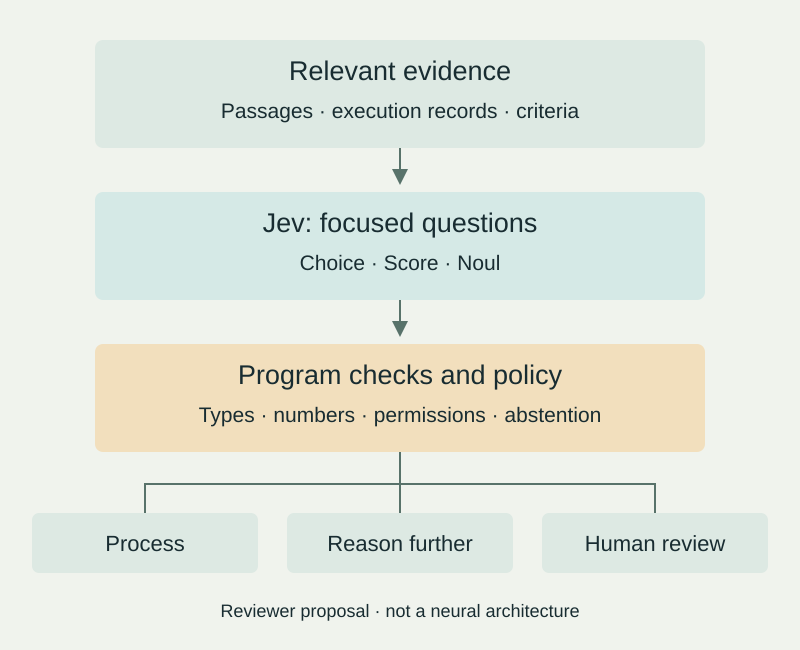
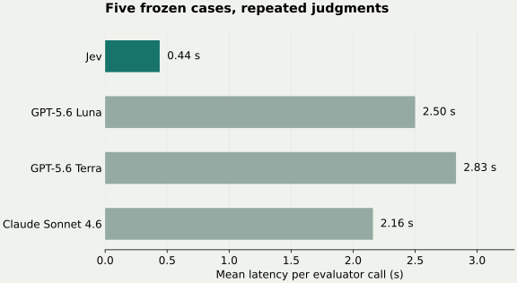

Agents repeatedly decide whether evidence is relevant, a failed task deserves another attempt, or a stronger model is needed. Generating a response for every small decision can make waiting for the model a substantial part of the workflow. Jev aims to make these judgments available through a short software call.
This review compares documentation and an early public experiment and checks ratios in published aggregates. It does not run the Jev API or reproduce the benchmark. The evidence does not establish general reasoning or scientific-computing superiority.
Decisions that software can consume
TypeSafe AI announced Jev on September 15, 2026. Its label System One emphasizes fast, focused judgments; it should not be read as a demonstrated model of human cognition or an established scientific taxonomy. Jev takes its name from William Stanley Jevons. [1]
Requests separate the material being assessed, state, from questions. Unlike a conventional large language model (LLM), Jev uses predefined answer spaces. It currently accepts text, including text in JSON objects and arrays, but no images, audio or video. Game demonstrations therefore do not establish visual perception or real-world robotic control. [2]
| Primitive | Output | Reviewer-designed example |
|---|---|---|
Choice | An option, option probabilities and confidence | Classify a run as normal, a retry candidate, needing investigation, or none of these |
Score | A distribution over ordered levels, its mean score and confidence | Evidence: unrelated, indirect or direct |
Noul | A 0–1 estimate that a statement is true | Does the document state the requested experimental condition? |
Choice allows up to 255 options. Designers can include other or not_stated. Noul has no separate confidence field. Thresholds need to respect these different meanings. [3] [4]
Parallel questions, composition in code
The documentation describes isolated, parallel evaluations against shared state. A broad question about whether a document can be processed can be decomposed into relevance, required information and ambiguity. Code combines the answers. Additional questions consume tokens but reportedly add little latency. Separate evaluation does not establish statistical independence or logical consistency across answers. [5]

Conceptually, latency includes preparing evidence, evaluating a model, generating sequential output and postprocessing. Removing open-ended generation can reduce one component. Input processing, network round trips, queueing and subsequent model calls remain. A model-call speedup is therefore different from a complete-workflow speedup.
If a replaceable decision stage accounts for fraction f of runtime and becomes s times faster, an elementary model gives total speedup 1 / [(1 − f) + f / s], assuming other costs remain fixed. In an illustrative scenario, making a stage that consumes 20% of runtime 100 times faster produces only about 1.25 times overall acceleration. Measure where time is spent first.
Probability, calibration and confidence
TypeSafe calls its training method reinforcement learning for calibrated decisions (RLCD). It distinguishes this goal from reinforcement learning from human feedback (RLHF) and reinforcement learning with verifiable rewards (RLVR). The consulted material does not specify enough about rewards, training procedures, model size or architecture to reimplement Jev. A particular encoder or loss function cannot be inferred from the interface. [6]
Calibration is a property evaluated across predictions. Among cases assigned roughly 0.8 probability of relevance, approximately 80% should be relevant. This does not guarantee any individual answer. Calibration predates Jev: Guo and colleagues studied how neural-network accuracy and calibration can diverge and evaluated temperature scaling. [7]
The API's confidence field has another meaning. For Choice and Score, it summarizes the concentration of the returned distribution. The explanation page does not give its exact formula. A confidence value of 0.9 must not be translated into 90% accuracy. Calibrate probabilities and abstention policies on the intended workload. [8]
For Score, the default result is Σ k·pₖ, where k is a level index and pk its probability. Ordered labels do not automatically have equally spaced meanings. This score is not a validated estimate of an energy or another physical quantity. [9]
Promising observations with narrow comparison conditions
TypeSafe's headline 193.6-times speed and 444.6-times cost improvements come from its own workflow evaluation. It uses strong external models' mean predictions as references and requests probability-bearing structured outputs from competing LLMs. This differs from a broad benchmark with independently established human answers. [1]
LangChain's September 20 experiment instead evaluated five frozen weather-agent responses 100 times per judge. Binary agreement with one human reviewer and variation in continuous scores were measured separately. LLM sampling settings were left at provider defaults; the Jev service version was not retained in the experiment metadata. [10]
| Judge | Human-label agreement | Mean latency / call | Mean cost / call |
|---|---|---|---|
| Jev | 100.0% | 0.44 s | $0.00035 |
| GPT-5.6 Luna | 96.4% | 2.50 s | $0.00039 |
| GPT-5.6 Terra | 99.8% | 2.83 s | $0.00289 |
| Claude Sonnet 4.6 | 80.0% | 2.16 s | $0.02811 |
These are reported repository values. There are only five distinct cases, not 500 independent problems. A judge can also be consistently wrong. [11]

Dividing the rounded mean costs gives advantages of approximately 1.11 times over Luna, 8.26 over Terra and 80.31 over Sonnet. Published JSON aggregates also give a mean within-case quality variance of approximately 1.494×10−5 for Jev; competitors' variances are about 92–913 times larger. [12]
Repeatability deserves investigation, but low score variance proves neither calibration nor general accuracy superiority. Tuned baselines, many more independent cases, multiple human reviewers and longitudinal evaluation are needed to determine whether the gains transfer.
Compare against classifiers as well as LLMs
Classification without text generation is well established. Encoder models such as ModernBERT provide relevant efficient baselines. Returning a category alone does not establish a novel learning principle. Jev should be assessed as a combination of a question-defined interface, probability outputs, parallel evaluation and a managed service. [13]
| Approach | Suitable conditions | Costs to compare |
|---|---|---|
| Rules and parsers | Explicit formats, arithmetic, dates and permissions | Maintaining exceptions |
| Encoder classifiers | Stable categories and labeled examples | Labeling, training and infrastructure |
| Structured-output LLMs | Judgment combined with reasoning, explanation or generation | Input/output length, reasoning and retries |
| Jev | Frequent focused semantic decisions with bounded answers | Service calls, question design, calibration and escalation |
This table offers selection criteria, not measured rankings. LangChain's TypeSafeClassifier integration illustrates uses such as model routing. Retaining the generation model while replacing selected decisions is a natural experiment. [14]
Schema compliance leaves semantic errors unresolved
A constrained answer space prevents inventing an option outside that space. It does not prevent choosing the wrong permitted answer. This review therefore separates schema compliance from correctness when interpreting the company's “no hallucinations” language.
The documented Jev 1.13 weaknesses include arithmetic, counting, date comparison, indirect references, irrelevant long context and adversarial input. Independently asking a proposition and its negation does not guarantee probabilities summing to one. When the intended events are true complements, compute 1 − p in code instead of expecting separate model responses to enforce probability identities. [15]
Permissions and objective success criteria should remain explicit. File existence, exit codes, test results and numeric tolerances belong in code. The proposed role for Jev is interpreting unstructured descriptions. This architecture is a reviewer recommendation, not evidence that Jev is a validated security control.
First experiments for research and coding harnesses
One candidate is screening public papers: does an abstract report measured device lifetime, or does the supplied passage directly support a particular claim? Keep the model that explains the paper while comparing the cost of repeated selection decisions.
Another is categorizing execution logs. A parser checks the exit code; Jev classifies unstructured error descriptions; code determines whether to retry, stop or call another model. In density functional theory (DFT) workflows, convergence tolerances, energy differences and forces remain numerical tasks. There is no evidence here that Jev replaces electronic-structure calculations or a validated property predictor.
The documented fixed model is jev-1.13.0, priced at $0.042 per million input tokens with no output charge. The whole request permits 64k tokens, while state plus its longest question permits 32k. English is the primary training language; Korean needs separate evaluation. The consulted documentation did not establish deployable on-premises weights. [16]
This illustrative request screens a public abstract. It has not been sent to the API. The instructions and criteria carry the intended meaning.
{
"model": "jev-1.13.0",
"state": {"abstract": "Public abstract to evaluate"},
"questions": {
"reports_device_lifetime": {
"type": "noul",
"instructions": "Does the abstract explicitly report measured OLED device lifetime?",
"criteria": {
"true": "A measured device lifetime result is explicitly stated.",
"false": "No such result is stated, or only a calculated proxy is given."
}
}
}
}Establish human labels for representative cases and compare rules, a small classifier, the current LLM and Jev on the same inputs. Record false positives, missed cases, observed accuracy by probability bin, abstention, median and 95th-percentile latency, and costs including retries and escalation. Separate repeated judgments of identical cases from evaluation on new independent cases.
The operational metric is cost per completed task meeting the required quality. Cheap classification can lose its advantage when errors create expensive rework. The proposed starting point is observation without changing execution, followed by limited deployment after error types and consequences are understood.
Related discussion and reading
Sergii Shcherbak's public LinkedIn introduction includes a Doom demonstration and links to the vendor announcement. Social content is treated as a discovery source; technical judgments above rely on primary documentation and the public experiment.
- Product intent and internal comparison conditions: TypeSafe announcement [1]
- The interface: System One [2] and Confidence [8]
- Sample size and reproducibility: LangChain evaluation [10] and pinned repository [11]
- Before deployment: documented Jev 1.13 limitations [15]